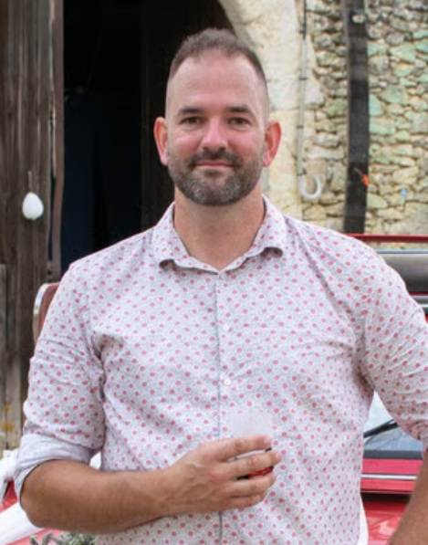
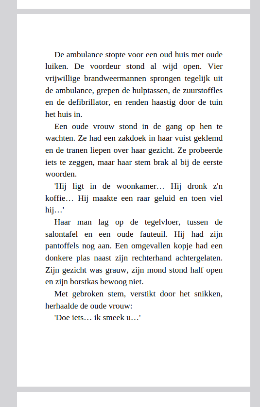
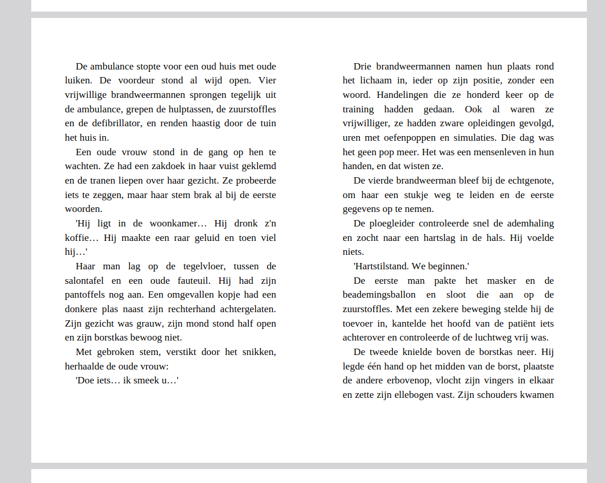

Schrijver · Frankrijk
Ik woon in Frankrijk sinds ongeveer 25 jaar… (JA! Dat is best lang…)
Mijn beroep is elektricien / loodgieter.
Maar… ik heb ook meerdere hobby's. Waarvan een: boeken schrijven.
Ik heb m'n eerste boek al uit. En die staat in de Franse Amazon te koop. 16 microverhalen.
Je zal lachen, giechelen, verrast zijn… maar ook huilen…
Ik wil deze verhalen ook in het Nederlands vertalen… Ik heb het eerste werk al gedaan (met hulp van AI). Maar… ik zou graag willen dat jij mij helpt, als je zin en tijd hebt.
Een, of meerdere verhalen lezen… en mij laten weten of er verbeteringen nodig zijn. Ik wil het verhaal niet anders maken… maar de goede Nederlandse vertaling hebben.
Hoe? Ik denk lekker simpel: je kan het uitprinten, met een rode pen erop schrijven en daarna via foto's (WhatsApp?) naar mij sturen: +33 6 01 09 98 59. Of via m'n mail: royvanmilperso@gmail.com.
Ook kan ik het uitprinten en naar je toe sturen. (Kost mij een beetje geld, maar dat maakt niet uit! Als je mij kan helpen!)
Deze vertaling helpt mij om m'n boek met 16 microverhalen netjes in het Nederlands te hebben. Ik wil een Nederlandse versie in Nederland kunnen verkopen. (Nee, ik zal er niet rijk mee worden… maar ik wil dat mensen voor een kleine prijs een leuk boek hebben.)
En JIJ zal van mij een exemplaar GRATIS krijgen!
En als je wilt, zet ik je naam ook op de 'Dankbetuiging'-lijst. Een kleinigheidje… maar het is wel leuk dat mensen weten dat jij geholpen hebt met dit boek.
Twee versies van dezelfde tekst. Kies wat het prettigst leest:

Enkele pagina
Dubbele paginaFred VAN HEEL
Heel erg bedankt, oom!